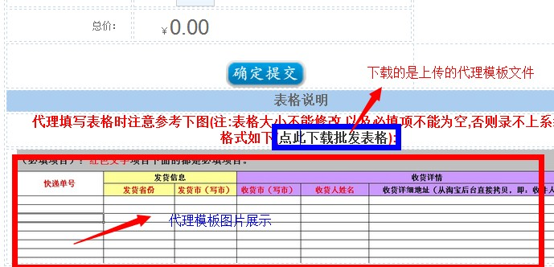

| 类型新增及编辑 |
|
空包业务类型新增及编辑页面主要是用于对系统空包类型的相关设置，不过多解释；请注意以下几点： 一、底单价格：此项代表，如果会员申请底单需要付费的话，请在此项中输入价格，这样的话，前台申请时会先从 会员账户中扣除该金额。 二、价格设置：按照各类型会员分别设置； 三、购买佣金设置：如果系统启用购买佣金时，根据选择的佣金模式依次设置各级上线所获取佣金比例。 佣金的计算方法：（会员购买价格-上线购买价格）*上线对应的佣金比例； 四、快递订单导出模板选择；系统内置5种快递类型模板（可根据自身情况定制） 五、代理表格模板：上传相应的代理表格模板，以便于在前台-》空包批发-》下载代理表格 六、批发模板图片：在前台-》空包批发-》进行展现，如图：  注：单号业务、小号业务类型新增、编辑与空包类似 |